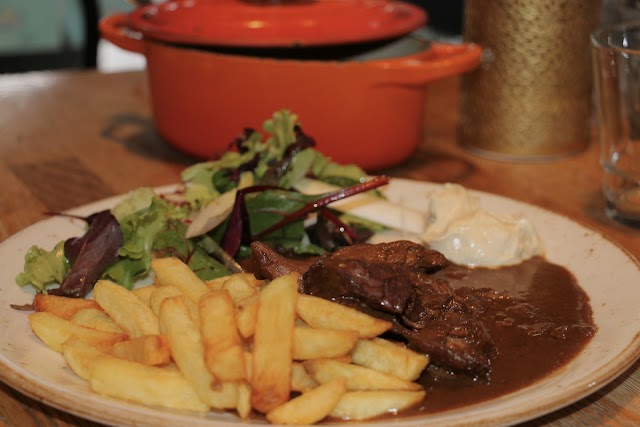
| 営業時間 | 水〜日 10:30〜22:30 |
|---|---|
| 定休日 | 月・火曜 |
| 住所 | Sint-Baafsplein 23, 9000 Gent |
| 予約 | 可(推奨) — ☎ 電話で予約 +32 485 81 41 29 ／ 公式サイト |
| 公式 | 公式サイト |
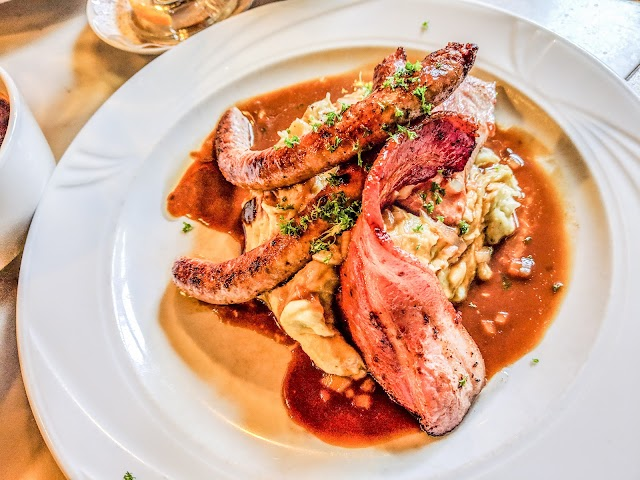
| 営業時間 | 昼12:00〜14:45/夜18:00〜22:30(日曜の夜は17:30〜) |
|---|---|
| 定休日 | 月曜。火〜木曜は昼休業(夜のみ営業) |
| 住所 | Corduwaniersstraat 65, 9000 Gent |
| 予約 | 可(推奨) — ☎ 電話で予約 +32 9 223 42 41 ／ 公式サイト |
| 公式 | 公式サイト |
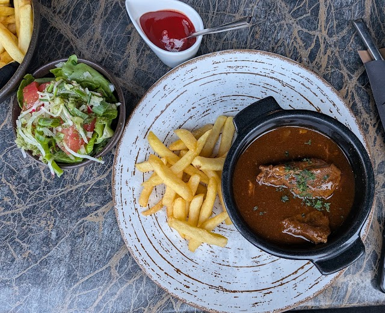
| 営業時間 | 火〜土曜 11:30〜22:00 |
|---|---|
| 定休日 | 日・月曜 |
| 住所 | Korenmarkt 10, 9000 Gent |
| 予約 | 可(推奨) — ☎ 電話で予約 +32 9 225 17 16 ／ 公式サイト |
| 公式 | 公式サイト |
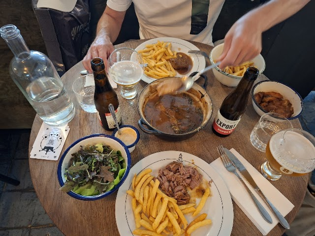
| 営業時間 | 月 6:00〜22:00 / 火 12:00〜14:00 / 6:00〜22:00 / 水 6:00〜22:00 / 木〜土 12:00〜14:00 / 6:00〜22:00 |
|---|---|
| 定休日 | 日曜 |
| 住所 | Burgstraat 19, 9000 Gent |
| 予約 | 可(推奨) — ☎ 電話で予約 +32 9 398 23 93 ／ 公式サイト |
| 公式 | 公式サイト |
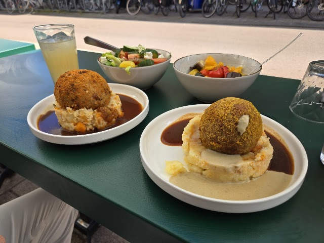
| 営業時間 | 月〜土曜 11:30〜21:00 |
|---|---|
| 定休日 | 日曜 |
| 住所 | Jakobijnenstraat 6, 9000 Gent |
| 予約 | 可(推奨) — ☎ 電話で予約 +32 486 67 87 76 ／ 公式サイト |
| 公式 | 公式サイト |
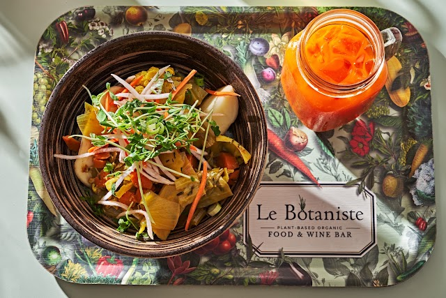
| 営業時間 | 月〜日 11:30〜21:30 |
|---|---|
| 定休日 | なし |
| 住所 | Hoornstraat 13, 9000 Gent |
| 予約 | 可(推奨) — ☎ 電話で予約 +32 9 233 45 35 ／ 公式サイト |
| 公式 | 公式サイト |
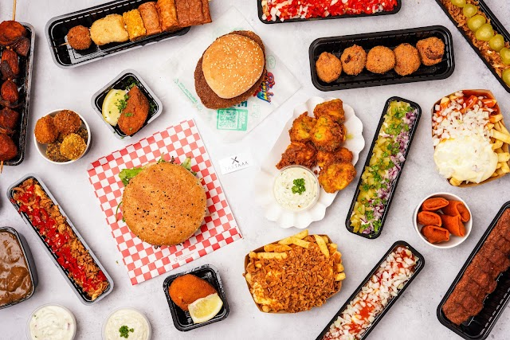
| 営業時間 | 月〜日 11:30〜22:00 |
|---|---|
| 定休日 | なし |
| 住所 | Heilige-Geeststraat 3, 9000 Gent |
| 予約 | 不要(店頭) — ☎ 電話で予約 +32 467 05 10 02 ／ 公式サイト |
| 公式 | 公式サイト |
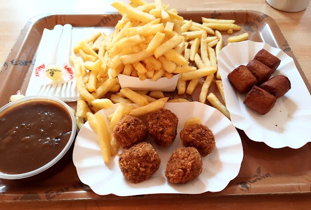
| 営業時間 | 月 5:00〜22:00 / 火〜木 11:30〜14:00 / 5:00〜22:00 / 金 11:30〜14:00 / 5:00〜23:00 / 日 5:00〜22:00 |
|---|---|
| 定休日 | 土曜 |
| 住所 | Papegaaistraat 89, 9000 Gent |
| 予約 | 不要(店頭) — ☎ 電話で予約 +32 9 329 40 22 ／ 公式サイト |
| 公式 | 公式サイト |
| 営業時間 | 月〜日 11:30〜17:30 |
|---|---|
| 定休日 | なし |
| 住所 | Goudenleeuwplein 3, 9000 Gent |
| 予約 | 不要(店頭) |
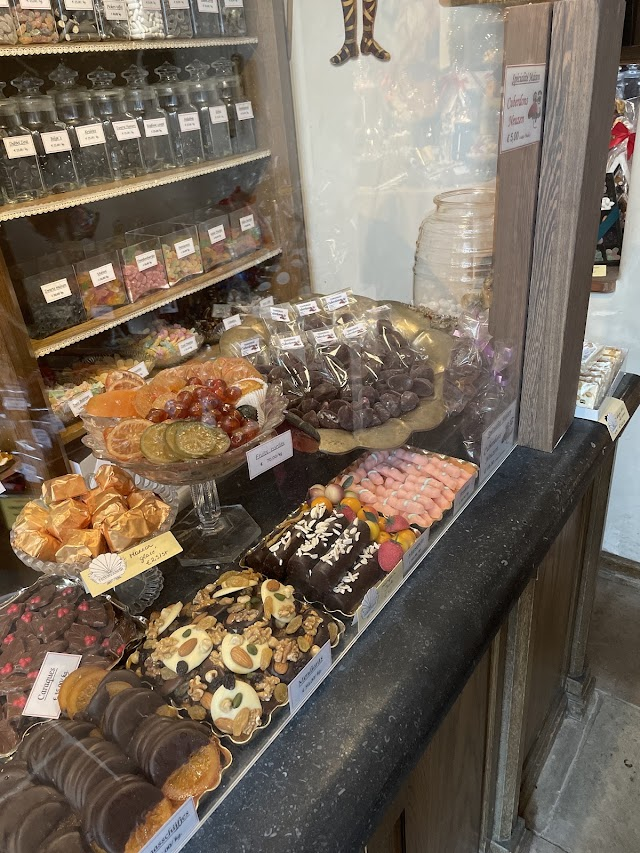
| 営業時間 | 火〜土曜 11:00〜18:00、日曜 12:00〜18:00 |
|---|---|
| 定休日 | 月曜 |
| 住所 | Kraanlei 79, 9000 Gent |
| 予約 | 不要(店頭) — ☎ 電話で予約 +32 9 279 59 01 ／ 公式サイト |
| 公式 | 公式サイト |
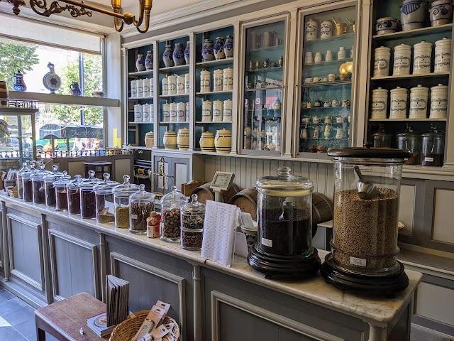
| 営業時間 | 月曜 13:00〜18:00、火〜土曜 10:00〜18:00 |
|---|---|
| 定休日 | 日曜・祝日 |
| 住所 | Groentenmarkt 3, 9000 Gent |
| 予約 | 不要(店頭) — ☎ 電話で予約 +32 9 225 83 36 ／ 公式サイト |
| 公式 | 公式サイト |
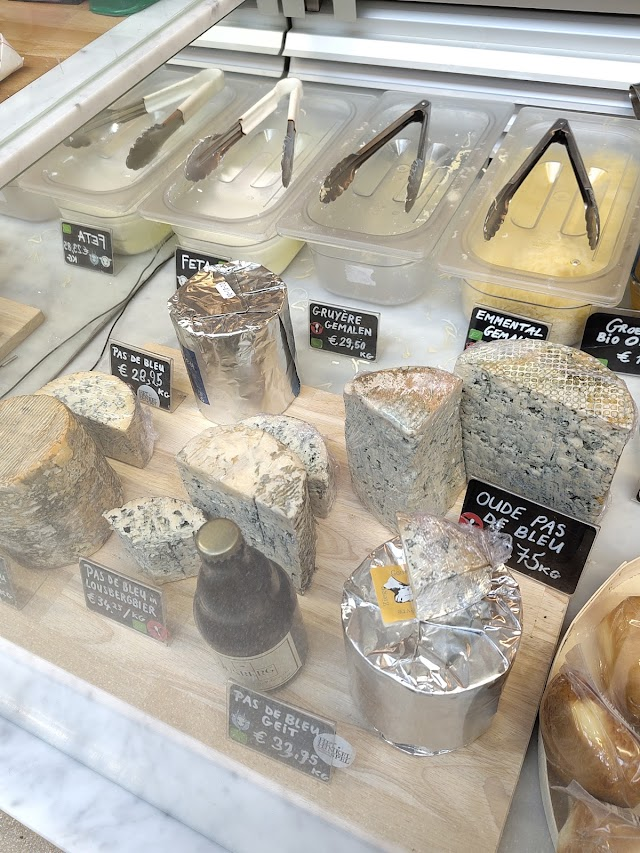
| 営業時間 | 月〜土 8:30〜18:00 |
|---|---|
| 定休日 | 日曜 |
| 住所 | Lousbergskaai 33, 9000 Gent |
| 予約 | 不要(店頭) — ☎ 電話で予約 +32 9 224 20 96 ／ 公式サイト |
| 公式 | 公式サイト |
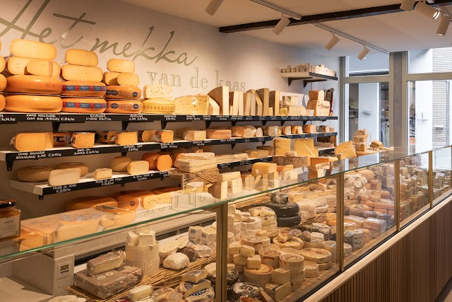
| 営業時間 | 火〜金曜 9:00〜13:00/13:30〜18:00、土曜 9:00〜18:00 |
|---|---|
| 定休日 | 日・月曜 |
| 住所 | Koestraat 9, 9000 Gent |
| 予約 | 不要(店頭) — ☎ 電話で予約 +32 9 225 83 66 ／ 公式サイト |
| 公式 | 公式サイト |
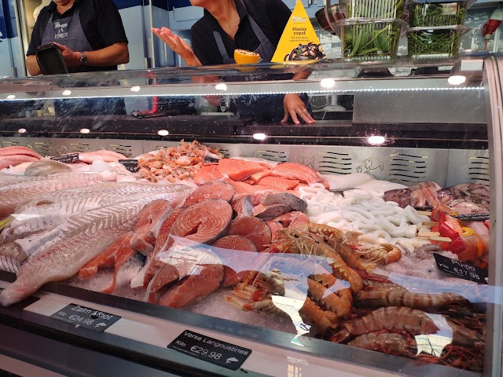
| 営業時間 | 金曜 7:30頃〜13:00頃(市の開催時間・要確認) |
|---|---|
| 定休日 | 市が立つのは金曜午前のみ(広場自体は常時開放) |
| 住所 | Vrijdagmarkt, 9000 Gent |
| 予約 | 不要(店頭) |
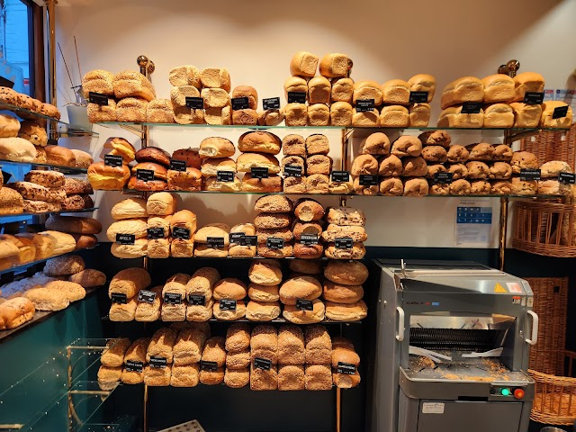
| 営業時間 | 月〜金 7:30〜18:00 / 土・日 8:00〜18:00 |
|---|---|
| 定休日 | なし |
| 住所 | Groentenmarkt 1, 9000 Gent |
| 予約 | 不要(店頭) — ☎ 電話で予約 +32 491 52 83 31 ／ 公式サイト |
| 公式 | 公式サイト |
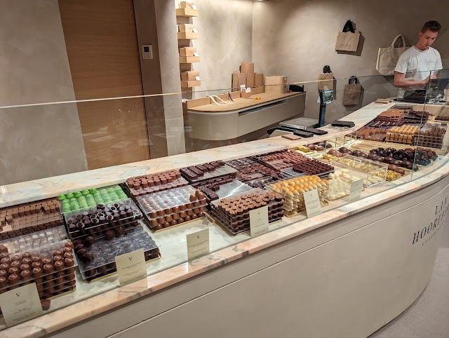
| 営業時間 | 月〜日 10:00〜18:00 |
|---|---|
| 定休日 | なし |
| 住所 | Sint-Baafsplein 15, 9000 Gent |
| 予約 | 不要(店頭) — ☎ 電話で予約 +32 9 221 03 81 ／ 公式サイト |
| 公式 | 公式サイト |
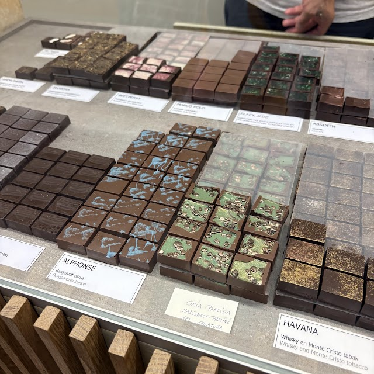
| 営業時間 | 火〜土 10:00〜18:00 |
|---|---|
| 定休日 | 月・日曜 |
| 住所 | Walpoortstraat 11A, 9000 Gent |
| 予約 | 不要(店頭) — ☎ 電話で予約 +32 473 96 57 33 ／ 公式サイト |
| 公式 | 公式サイト |
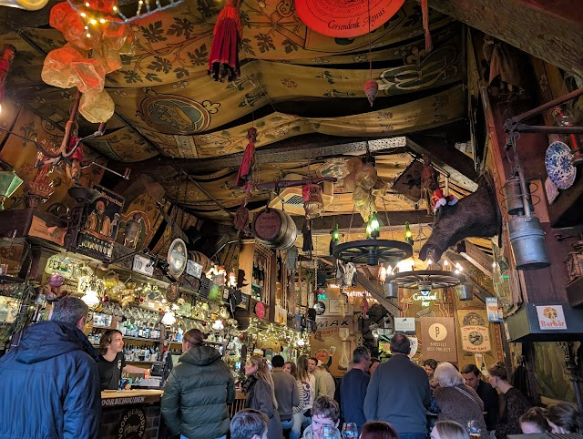
| 営業時間 | 月 16:30〜0:00 / 火 12:30〜1:00 / 12:00〜1:00 / 水〜土 12:00〜1:00 / 日 12:00〜19:30 |
|---|---|
| 定休日 | なし |
| 住所 | Vrijdagmarkt 50, 9000 Gent |
| 予約 | 可(推奨) — 公式サイト |
| 公式 | 公式サイト |
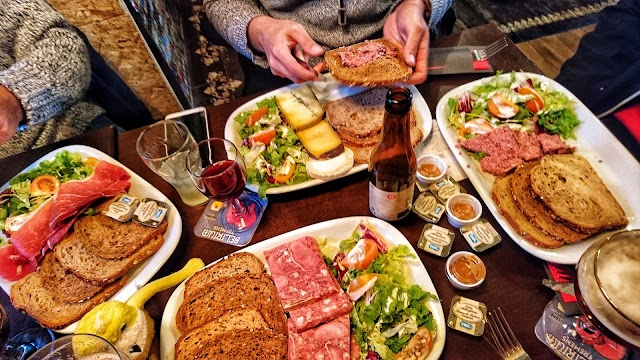
| 営業時間 | 月〜水曜 11:00〜0:30、木〜土曜 11:00〜1:00、日曜 11:00〜24:00 |
|---|---|
| 定休日 | 無休 |
| 住所 | Groentenmarkt 9, 9000 Gent |
| 予約 | 可(推奨) — ☎ 電話で予約 +32 9 225 06 80 |
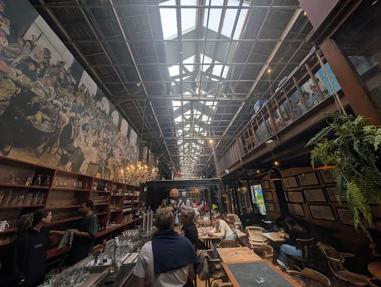
| 営業時間 | 月〜木 2:00〜18:00 / 金・土 2:00〜23:00 / 日 2:00〜18:00 |
|---|---|
| 定休日 | なし |
| 住所 | Rembert Dodoensdreef 1, 9000 Gent |
| 予約 | 可(推奨) — ☎ 電話で予約 +32 9 269 02 69 ／ 公式サイト |
| 公式 | 公式サイト |
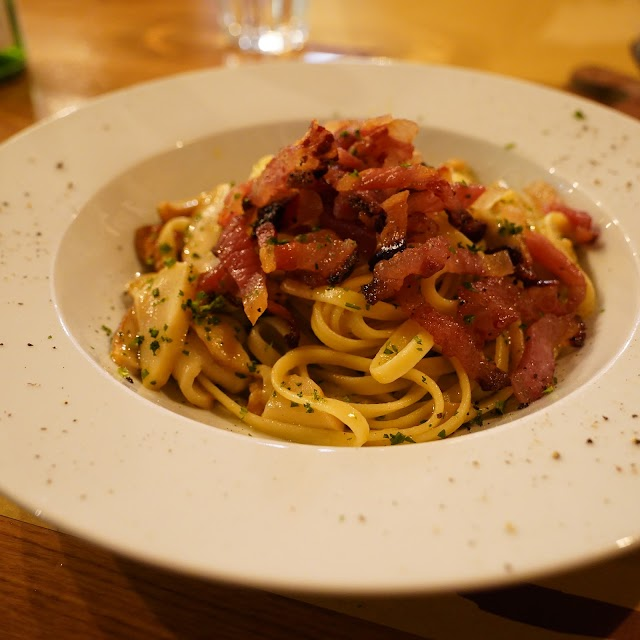
| 営業時間 | 月・水・木 18:00-22:00、金・土 12:00-14:00/18:00-22:30、日 12:00-14:00/18:00-22:00 |
|---|---|
| 定休日 | 火曜(夏季休業あり: 8/17-9/3) |
| 住所 | Drabstraat 17, 9000 Gent |
| 予約 | 可(推奨) — ☎ 電話で予約 +32 9 391 80 50 ／ 公式サイト |
| 公式 | 公式サイト |
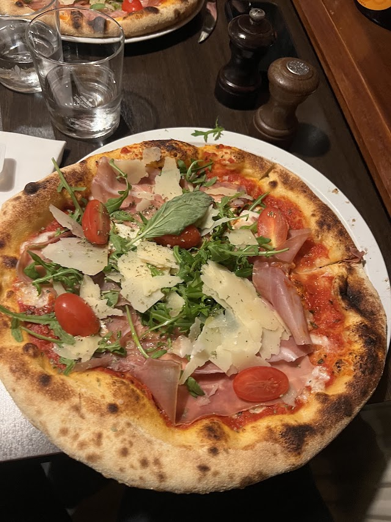
| 営業時間 | 昼12:00-14:00/夜18:00-22:00(公式サイトで確認) |
|---|---|
| 定休日 | 水曜・木曜。※夏季休業: 2026年7月20日〜8月20日(8月21日より営業再開、公式サイト告知) |
| 住所 | Sint-Amandstraat 1, 9000 Gent |
| 予約 | 可(推奨) — ☎ 電話で予約 +32 472 39 64 71 ／ 公式サイト |
| 公式 | 公式サイト |
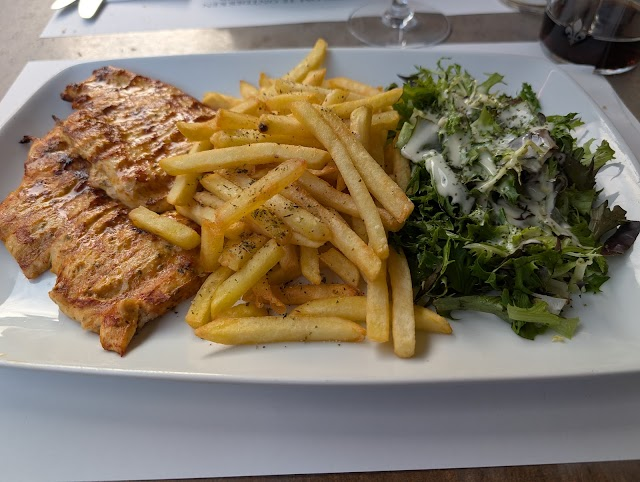
| 営業時間 | 木-月 11:45-14:00/18:00-22:00 |
|---|---|
| 定休日 | 火曜・水曜 |
| 住所 | Vlaanderenstraat 83, 9000 Gent |
| 予約 | 可(推奨) — ☎ 電話で予約 +32 9 223 92 26 ／ 公式サイト |
| 公式 | 公式サイト |
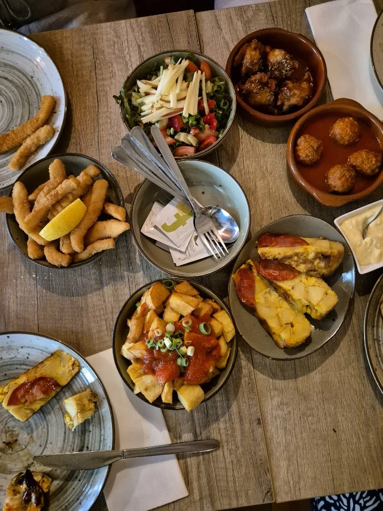
| 営業時間 | 毎日 18:00-21:30(昼は12名以上の団体予約のみ) |
|---|---|
| 定休日 | 水曜 |
| 住所 | Corduwaniersstraat 41, 9000 Gent |
| 予約 | 可(推奨) — ☎ 電話で予約 +32 9 225 18 89 ／ 公式サイト |
| 公式 | 公式サイト |
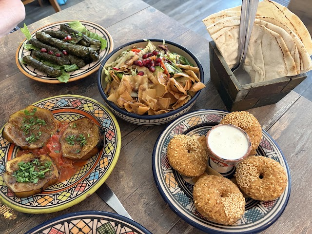
| 営業時間 | 水・木 18:00-23:00、金-日 12:00-15:00/18:00-23:00(キッチンは21:30まで) |
|---|---|
| 定休日 | 月曜・火曜 |
| 住所 | Brabantdam 69, 9000 Gent |
| 予約 | 可(推奨) — ☎ 電話で予約 +32 465 13 53 64 ／ 公式サイト |
| 公式 | 公式サイト |
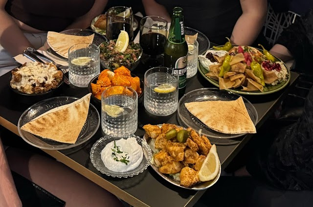
| 営業時間 | 月〜土 12:00〜14:00 / 6:00〜22:00 |
|---|---|
| 定休日 | 日曜 |
| 住所 | Lammerstraat 12, 9000 Gent |
| 予約 | 可(推奨) — 公式サイト |
| 公式 | 公式サイト |
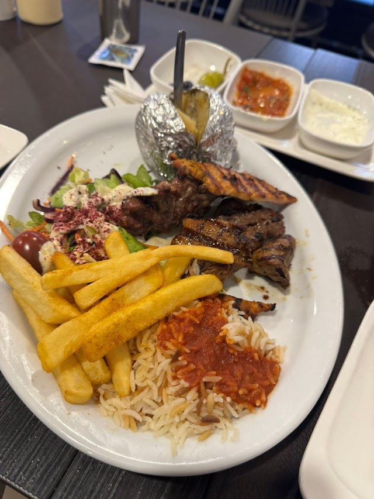
| 営業時間 | 月〜日 11:00〜23:15 |
|---|---|
| 定休日 | 火曜 |
| 住所 | Sleepstraat 70, 9000 Gent |
| 予約 | 可(推奨) — ☎ 電話で予約 +32 9 233 51 24 ／ 公式サイト |
| 公式 | 公式サイト |
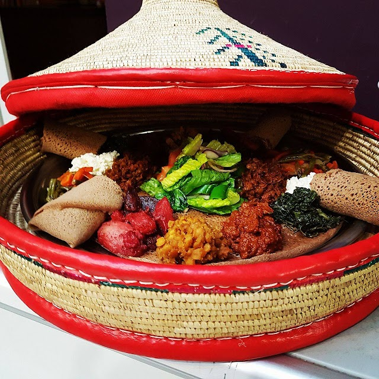
| 営業時間 | 火-金 18:00-22:00、土 17:00-22:00、日 17:00-21:00(毎月第1金曜はビュッフェナイト) |
|---|---|
| 定休日 | 月曜 |
| 住所 | Sint-Salvatorstraat 53, 9000 Gent |
| 予約 | 可(推奨) — ☎ 電話で予約 +32 9 225 01 60 ／ 公式サイト |
| 公式 | 公式サイト |
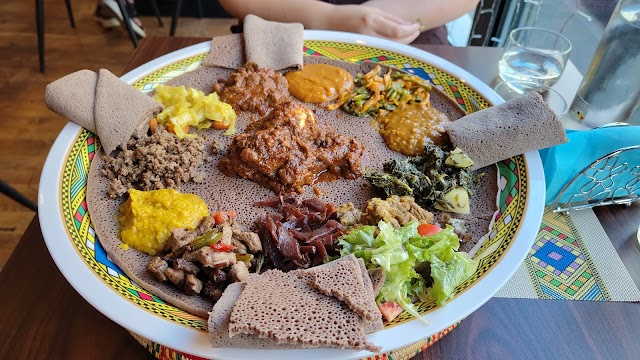
| 営業時間 | 月 18:00-22:00、水 18:00-22:00、木 18:00-23:00、金・土 12:00-15:00/18:00-23:00、日 12:00-22:00 |
|---|---|
| 定休日 | 火曜 |
| 住所 | Zuidstationstraat 22, 9000 Gent |
| 予約 | 可(推奨) — ☎ 電話で予約 +32 491 22 66 55 ／ 公式サイト |
| 公式 | 公式サイト |
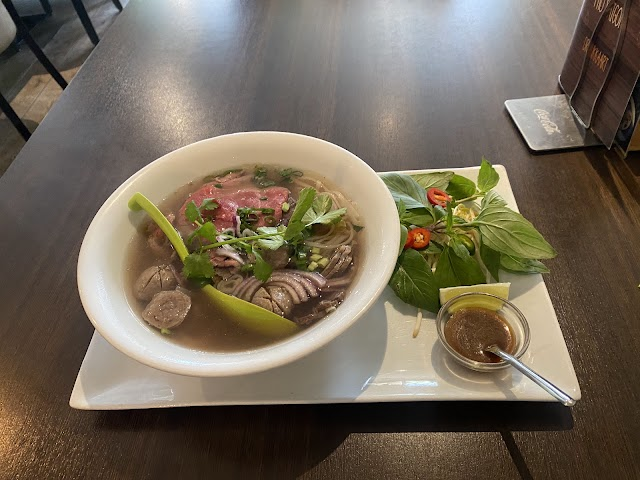
| 営業時間 | 水-日 11:30-14:30/17:30-22:00 |
|---|---|
| 定休日 | 月曜・火曜 |
| 住所 | Donkersteeg 5, 9000 Gent |
| 予約 | 可(推奨) — ☎ 電話で予約 +32 474 28 15 52 ／ 公式サイト |
| 公式 | 公式サイト |
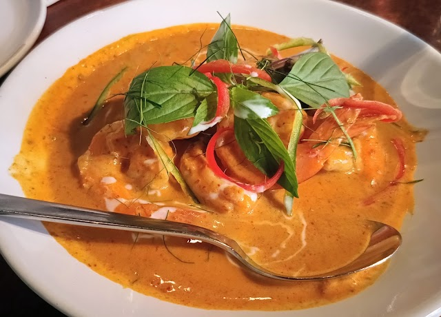
| 営業時間 | 月 18:00-22:00、火 12:00-14:00/18:00-22:00、金-日 12:00-14:00/18:00-22:00 |
|---|---|
| 定休日 | 水曜・木曜 |
| 住所 | Donkersteeg 23, 9000 Gent |
| 予約 | 可(推奨) — 公式サイト |
| 公式 | 公式サイト |
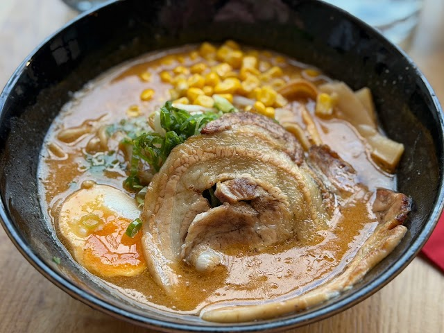
| 営業時間 | 火〜木 12:00〜14:00 / 6:00〜21:00 / 金・土 12:00〜14:00 / 6:00〜21:30 |
|---|---|
| 定休日 | 月・日曜 |
| 住所 | Kortrijksesteenweg 110, 9000 Gent |
| 予約 | 可(推奨) — ☎ 電話で予約 +32 9 377 71 61 ／ 公式サイト |
| 公式 | 公式サイト |
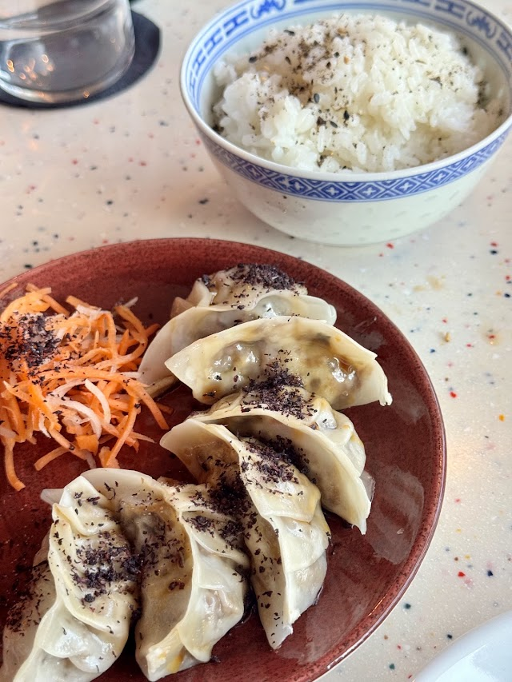
| 営業時間 | 火〜土 6:00〜22:00 |
|---|---|
| 定休日 | 月・日曜 |
| 住所 | Kongostraat 2, 9000 Gent |
| 予約 | 可(推奨) — ☎ 電話で予約 +32 9 398 33 38 ／ 公式サイト |
| 公式 | 公式サイト |
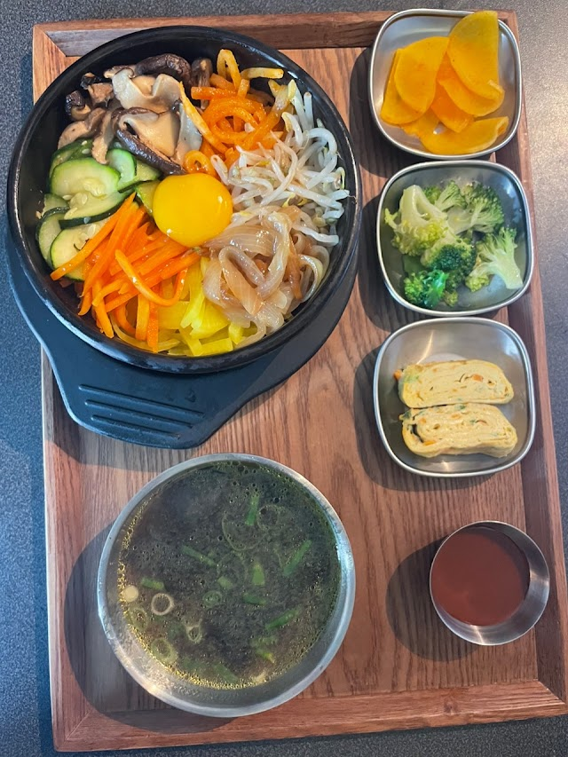
| 営業時間 | 毎日 18:00-22:00 |
|---|---|
| 定休日 | 無休 |
| 住所 | Oudburg 23, 9000 Gent |
| 予約 | 可(推奨) — 公式サイト |
| 公式 | 公式サイト |
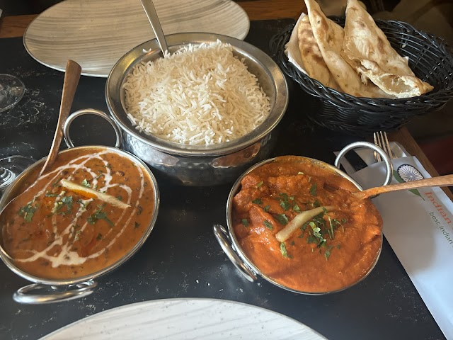
| 営業時間 | 火-木・日 12:00-14:30/17:30-22:30、金・土 12:00-14:30/17:30-23:00 |
|---|---|
| 定休日 | 月曜 |
| 住所 | Sint Michielstraat 10, 9000 Gent |
| 予約 | 可(推奨) — 公式サイト |
| 公式 | 公式サイト |
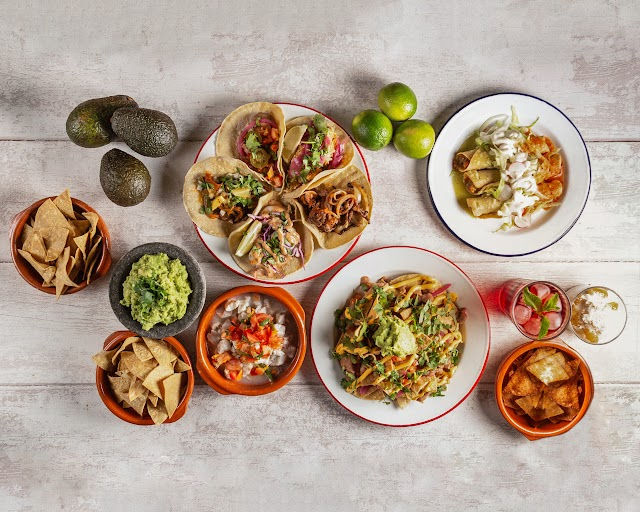
| 営業時間 | 火-木 17:30-22:00、金 12:00-15:00/17:30-22:00、土 12:00-22:00(キッチンは21:30まで) |
|---|---|
| 定休日 | 日曜・月曜・祝日 |
| 住所 | Gebroeders Vandeveldestraat 3, 9000 Gent |
| 予約 | 可(推奨) — ☎ 電話で予約 +32 9 391 66 60 ／ 公式サイト |
| 公式 | 公式サイト |
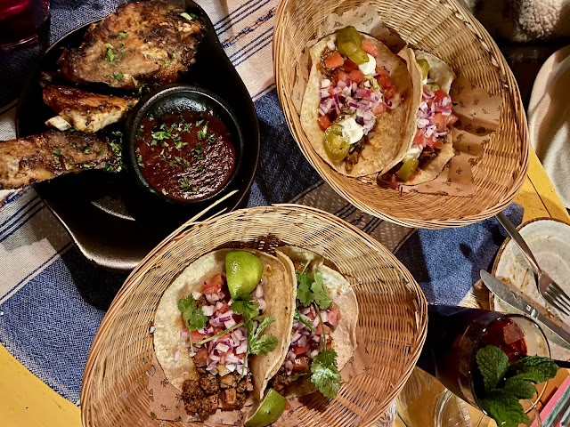
| 営業時間 | 月〜水 4:00〜23:00 / 木・金 4:00〜23:30 / 土 12:00〜23:30 / 日 12:00〜21:30 |
|---|---|
| 定休日 | なし |
| 住所 | Beverhoutplein 22, 9000 Gent |
| 予約 | 可(推奨) — ☎ 電話で予約 +32 471 88 54 01 ／ 公式サイト |
| 公式 | 公式サイト |
※ヘントはベジ先進都市 — Le Botanisteのプラントベースも一見の価値あり。中心部は徒歩圏でコンパクト。
選考基準: ①個人・公式ブログ/現地メディアでの名店言及 ②複数レビューサイトでの口コミ・行列の突出 ③創業年・代替わりのある老舗 ④食の専門街・市場立地 ⑤受賞歴・ガイド掲載。写真は各店の料理・店内の実写(Google Maps投稿写真、© Google)。予約は各カードの「予約」欄のリンク(電話/予約サイト)から。営業時間・定休日は2026年7月時点の各種サイト情報で、変更があり得ます。